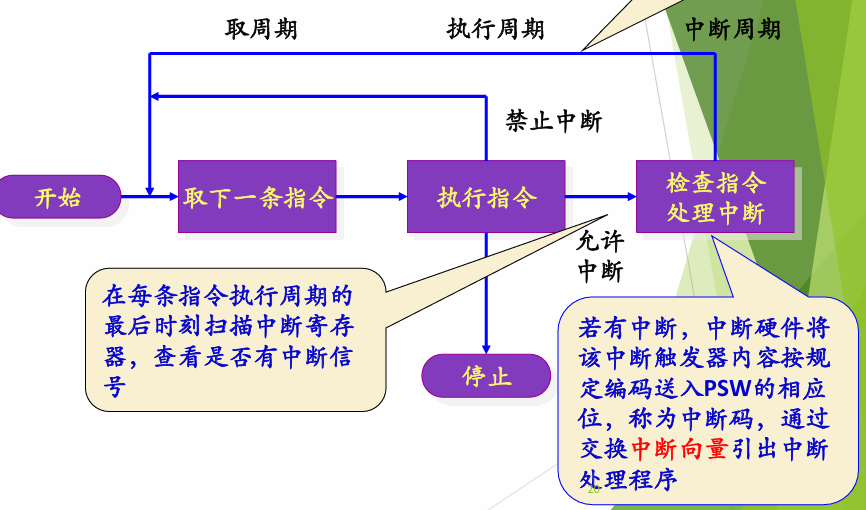
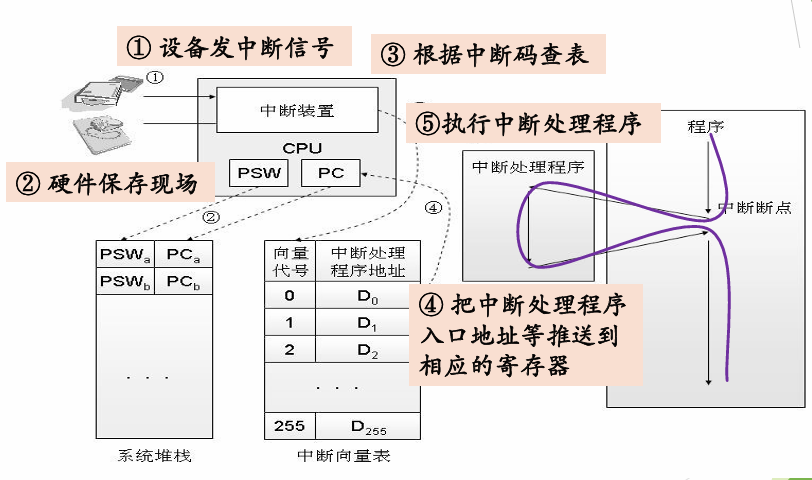
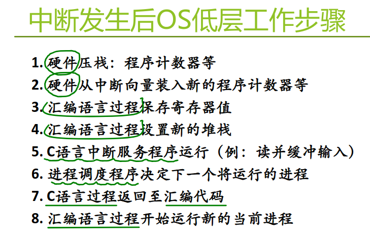
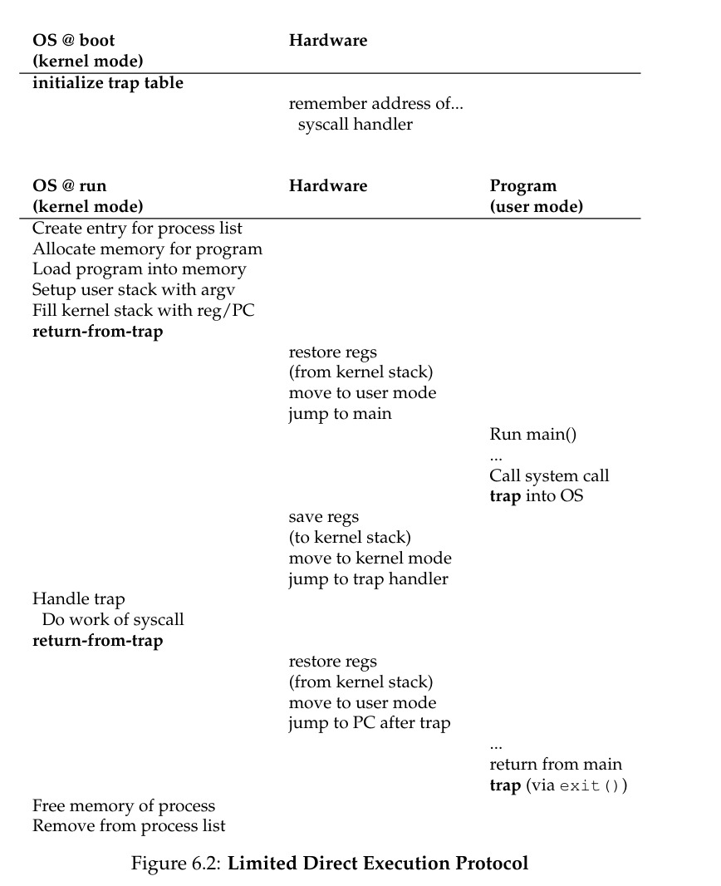
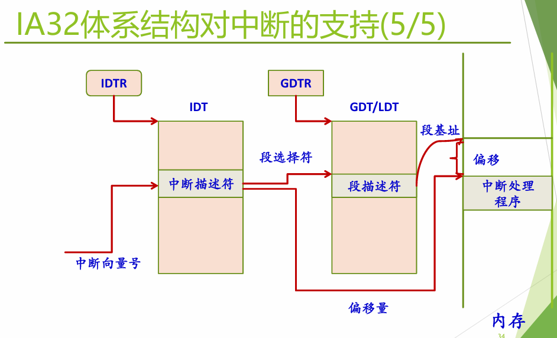
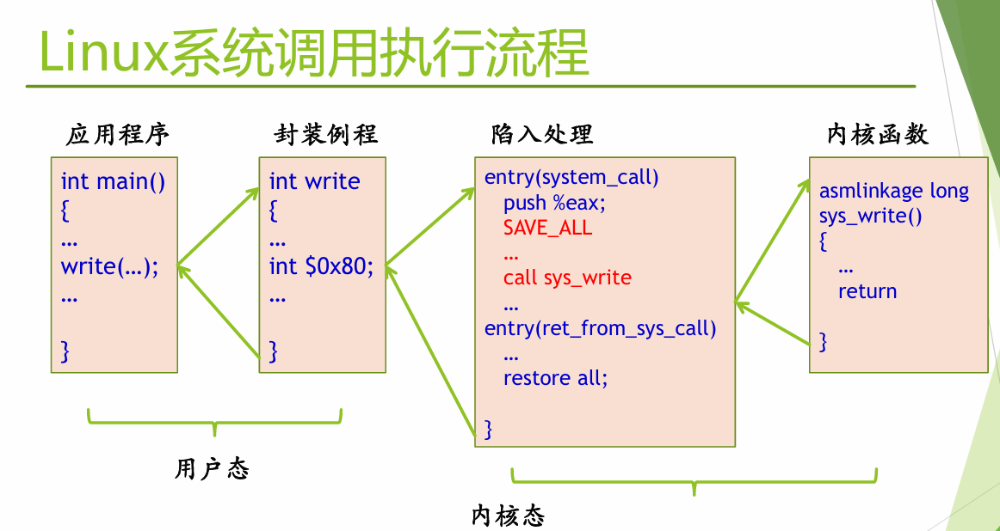

运行环境 #
CPU与寄存器 #
CPU是计算机的核心部件，负责执行指令和处理数据。寄存器是CPU内部的高速存储器，用于临时存储数据和指令。对于一个程序而言，要进行运行的话，需要先将这个程序的代码和数据从磁盘加载到内存中，然后CPU通过寄存器来访问这些数据和指令。
寄存器可以分为用户可见寄存器和系统寄存器，前者包括
- 数据寄存器(
data register，又称通用寄存器)、 - 地址寄存器
- 条件码寄存器，
机器语言可以直接引用；后者包括
- 程序计数器(
PC:program counter)，存放下一条要执行的指令的地址 - 指令寄存器(
IR:Instruction Register)，存放当前执行的指令 - 程序状态字(
PSW:Program Status Word)。
其中PSW是操作系统进程上下文切换时需要保存和恢复的关键信息。
为了实现保护，硬件提供了基本的运行机制，让处理器具有不同的运行模式，在不同模式下运行的指令集合不同，权限也不同。然而操作系统实际上只需要两种运行状态：内核态和用户态。对于x86而言支持4个特权级别，从R0到R3特权能力降低，R0-内核态，R3-用户态，大多数基于x86的处理器的操作系统只用了R0和R3两个特权级别。
因为在对CPU进行虚拟化的时候，既要考虑效率又要考虑操作系统能够获取控制权。如果选择最原始的Direct Exectuion，即在运行程序的时候CPU中只有这个程序的代码，这样虽然有很高的效率，但是操作系统是无法保证程序在不破坏其他东西的情况下执行的；而且也无法使其停止并转移到其他进程来实现时间共享（这个也是虚拟化CPU的关键）。因此引入user mode和kernel mode来限制用户程序的执行权限以保证操作系统的安全。这就是Limited Direct Execution。
CPU的状态知道了，那如何进行转换呢？从用户态到内核态只有唯一途径：中断、异常/陷入机制；而从内核态到用户态，是由内核主动进行的。例如陷入指令，x86的int(Interrupt)，x86-32的sysenter/sysexit，x86-64的syscall/sysret，risc-v的ecall等等。
中断与异常 #
这是CPU对系统发生的某个事件作出的一种反应，CPU暂停正在执行的程序，保留现场后自动转去执行相应事件的处理程序，处理完成后返回进程调度程序，选择接下来要执行的程序（有可能是刚刚被打断的程序也有可能不是）。
- 中断的引入：为了支持CPU和设备之间的并行操作
- 异常的引入：表示CPU执行指令时本身出现的问题
| 类别 | 原因 | 异步/同步 | 返回行为 |
|---|---|---|---|
| 中断 | 来自 I/O 设备、其他硬件部件 | 异步 | 总是返回到下一条指令 |
| 陷入 | 有意识安排的 | 同步 | 返回到下一条指令 |
| 故障 | 可恢复的错误 | 同步 | 返回到当前指令 |
| 终止 | 不可恢复的错误 | 同步 | 不会返回 |
对于硬件来说会在每条指令执行结束后检测是否有中断信号，若有，
- 保存相关寄存器信息：CPU转为内核态。硬件自动将当前程序计数器（PC）的值压入系统栈，以便中断处理结束后能正确返回。中断硬件将该中断触发器内容按规定编码送入
PSW的相应位，称为中断码，通过交换中断向量引出中断处理程序。 - 识别中断源：CPU通过中断向量或中断查询的方式，确定具体是哪个设备或事件发出了中断请求。
- 获取入口地址：根据中断号查找中断向量表（
IVT，Interrupt Vector Table），从中读出对应的中断服务程序（ISR，Interrupt Service Routine）的入口地址。 - 切换上下文：将CPU的指令指针（PC）设置为该入口地址，同时（如果需要）切换到内核栈，开始执行中断服务程序。
- 恢复现场。
接着CPU控制器转移给中断处理程序：
- 保存相关寄存器信息：硬件由于成本原因只能保存2个或多个寄存器，而在软件层面需要保存完整的寄存器信息。
- 分析中断/异常的具体原因
- 执行对于的处理功能
- 恢复线程，返回被打断的程序（或者scheduler）
下面是硬件检查是否有中断图和中断相应流程图：
 
⭐中断处理流程总结 #
# (xv6 的 kernelvec):
kernelvec:
# STEP #1 -- 保存所有通用寄存器到当前进程的内核栈
sd ra, 0(sp)
sd sp, 8(sp)
sd gp, 16(sp)
# ...
sd t5, 248(sp)
sd t6, 256(sp)
# STEP #2 -- 调用 C 语言中断处理程序
call kerneltrap # (里面后续有调度逻辑)
# STEP #3 -- 恢复所有通用寄存器
ld ra, 0(sp)
# ...
# STEP #4 -- 硬件返回
sret # 硬件指令：恢复 PC 和特权级注意，
- 在中断入口时，硬件会自动查中断向量表并读出中断处理程序入口地址，自动把进程A的PC、PSW保存到内核栈，自动切换到内核栈，自动转入内核态，自动将入口地址加载到寄存器中；
- 接着，在中断处理之前，软件汇编会将所有的通用寄存器保存到内核栈(STEP #1)，然后调用c语言中断处理程序(STEP #2)；
- 在中断处理结束后，
- 假设继续调度该进程A，先把内核栈的通用寄存器都pop回来(STEP #3)，然后执行中断返回指令，硬件自动从内核栈上恢复PC和PSW，回到用户态(STEP #4)；
- 假设调度其他的进程B，调度器会把A的内核栈指针保存到A的PCB中，此时A的内核栈上仍然保存着其上下文；从新进程B的PCB中读出B之前保存的内核栈指针并将CPU的RSP切换到这个指针。然后从B的内核栈上pop出所有通用寄存器到CPU的通用寄存器中(STEP #3)，执行中断返回指令，硬件自动从内核栈上恢复PC和PSW，回到用户态(STEP #4)。
里面调度的细节是，只需要从PCB找出内核栈指针即可，进程的上下文不在PCB中，而在进程自己的内核栈上没变，只需要找到栈指针就好了。


IA32中对中断的支持 #
- 实模式：
IVT，存放中断服务程序的入口地址，入口地址=段地址左移4位+偏移地址，不支持CPU运行状态切换，中断处理与一般的过程调用相似。在实模式下，CPU 只有一种运行模式（相当于最高权限），没有“用户态”和“内核态”的概念。因此，当中断发生时，CPU 不需要、也不会去检查或切换 CPU 的特权级。因为不切换状态，用户程序（如果存在这个概念的话）可以直接修改 IVT，使其指向恶意代码。所以有第二种模式： - 保护模式：
IDT（Interrupt Descriptor Table），采用门(gate)描述符数据结构描述中断向量。
在实模式中IVT位于物理地址0x0000处，大小为1024字节，每个表项为4字节，格式为段地址:偏移地址。
中断硬件处理过程：
- 确定与中断或异常关联的向量i
- 通过
IDTR寄存器（存放基址）找到IDT表，获得中断描述符（表中的第i项） - 从
GDTR寄存器获得GDT(Global Descriptor Table全局描述符表)的地址；结合中断描述符中的段选择符，在GDT表获取对应的段描述符；从该段描述符中得到中断或异常处理程序所在的段基址 - 特权级检查：检查是否发生了特权级的变化，如果是，则进行堆栈切换(必须使用与新的特权级相关的栈)
- 硬件压栈，保存上下文环境；如果异常产生了硬件出错码，也将它保存在栈中
- 如果是中断，清IF位
- 通过中断描述符中的段内偏移量和段描述符中的基地址，找到中断/异常处理程序的入口地址，执行其第一条指令
这是IA32对中断处理的流程图：

运行机制 #
系统调用 #
系统调用是操作系统内核提供给用户程序的一组特殊接口，它允许运行在用户态的程序请求内核提供的特权服务。当应用程序需要执行某些受保护的操作时（如读写文件、创建进程、分配内存等），必须通过系统调用陷入内核，由内核代表应用程序完成这些操作。
从本质上讲，系统调用是用户空间与内核空间之间的唯一合法入口，也是操作系统为上层应用程序提供服务的桥梁。
| 系统调用 | C函数 | 库函数 | |
|---|---|---|---|
| 定义 | 操作系统内核提供的接口，允许用户程序请求内核服务 | C语言标准定义的函数，属于语言本身的一部分 | 一组预先编写好的函数的集合，可能封装多个系统调用和C函数 |
| 执行空间 | 内核空间 | 用户空间 | 用户空间 |
| 特权级别 | 内核态（Ring 0） | 用户态（Ring 3） | 用户态（Ring 3） |
| 调用方式 | 软中断（int 0x80）或专用指令（syscall/sysenter） | 普通函数调用指令（call） | 普通函数调用指令（call） |
| 参数传递 | 通过寄存器传递 | 通过栈或寄存器传递 | 通过栈或寄存器传递 |
| 上下文切换 | 需要，用户态↔内核态切换 | 不需要 | 不需要 |
| 性能开销 | 大（数百到数千CPU周期） | 小（几个到几十个CPU周期） | 小到中等（取决于内部实现） |
| 可移植性 | 差，依赖特定操作系统 | 好，遵循C语言标准 | 较好，但不同平台实现可能不同 |
| 错误处理 | 返回-1，通过errno指示错误 | 返回值或特定错误码 | 多样化，可能使用errno或返回值 |
| 访问权限 | 可访问硬件和内核数据结构 | 只能访问进程用户空间 | 只能访问进程用户空间 |
| 典型示例 | open(), read(), fork(), brk() | strlen(), memcpy(), sin() | printf(), malloc() |
| 依赖关系 | 直接依赖操作系统内核 | 依赖C编译器 | 可能依赖系统调用和其他库函数 |
注：printf、malloc等库函数内部通常会封装系统调用（如write、brk/sbrk、read），但对外提供更友好的编程接口。
注意，在中断向量表中添加系统调用的中断向量，只需要添加一项即可，这一项作为所有系统调用的统一入口，使得CPU进入内核态，进入中断处理程序；然后在这里面会利用系统调用的系统调用号和使用系统调用表来确定应当对应哪一个特定的系统调用。
执行过程是：
- 硬件保护现场；查中断向量表吧控制权移交给总入口程序
- 软件保存现场；参数保存在内核堆栈中，查系统调用表把控制权转给内核函数
- 执行系统调用函数
- 恢复现场返回用户程序
例如在Linux中陷入指令选择的中断向量表的数字是int 0x80，硬件提供了四种门但软件实际只用了陷阱门和中断门，前者允许被打断允许新的系统调用进来；而后者则会“关门”直到这个执行结束。

在进入内核后，system_call会将系统调用号压栈，检测是否是合法的号码，如果是，通过系统调用表寻址找到对应的系统调用例程:call *SYMBOL_NAME(sys_call_table)(,%eax,4)，执行完后将返回值存入eax中，并ret_from_sys_call。
那么在从内核返回到用户态的过程中需要做什么呢？在ret_from_sys_call中，首先会关中断避免被打断，并执行：
cmpl $0,need_resched(%ebx)
jne reschedule
cmpl $0,sigpending(%ebx)
jne signal_return当为0时不需要重新调度继续执行；当为1时需要重新调度；如果继续执行，还会继续判断有没有未处理的信号（信号是异步处理的，处理点一般都是在内核返回到用户态之前，如果有挂起的信号，就调用信号处理函数，且要把信号全部处理完）
假设选择调度另一个新的进程，此时不能restore all，而是会选择保存在PCB(Process Control Block)中，这是与进程一一对应的进程控制块，在Linux中就是task_struct。这个概念会在下一节中展开讲解。
机制与策略分离的思想 #
机制解释的是What，能做什么？一般是不变的；策略解释的是How，怎么做？一般是可调的。
比如缓存机制设计，机制是基础设施，提供通用的数据存储、访问和管理的功能，不关心具体如何使用。入读写接口、容量限制等等；而策略是在机制之上决定的具体行为规则，比如淘汰策略（LRU，LFU）、写策略（Write-Through，Write-Back）等等。